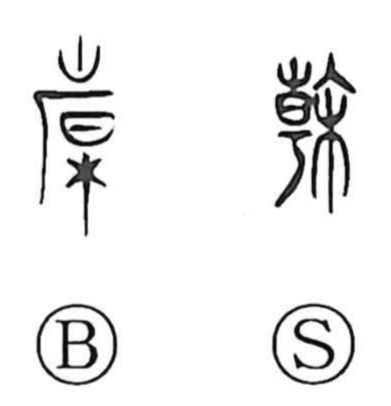

幹

Uncategorized
Kun: miki | On: kan
trunk ・ pillar ・ to rectify
Explanation
A picto-phonetic graph: 干 (kan) supplies the sound, while the core image is a flagpole bearing a decorative streamer—the same motif seen in the flag series 旂, 旆, 旌, 旗. The orthodox form 榦 adds the wood element, making the sense of a tree’s trunk explicit. Because a flagpole is the supporting pillar on which the flag depends, the character came to mean a “pillar” or “trunk,” and by extension, the act of setting the foundation right—“to rectify.”